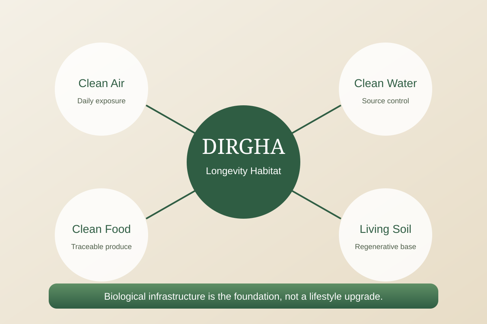
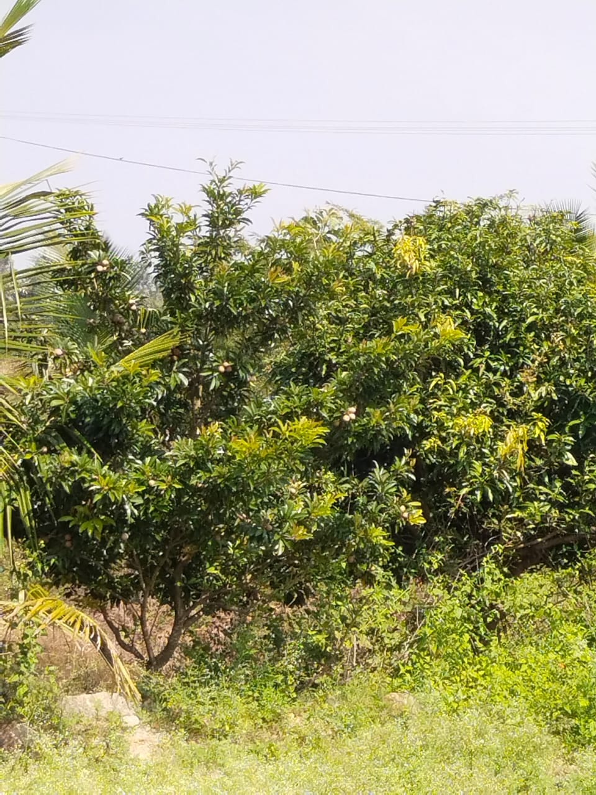
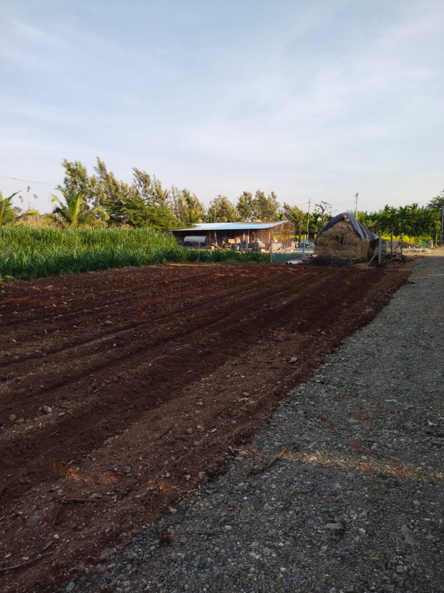
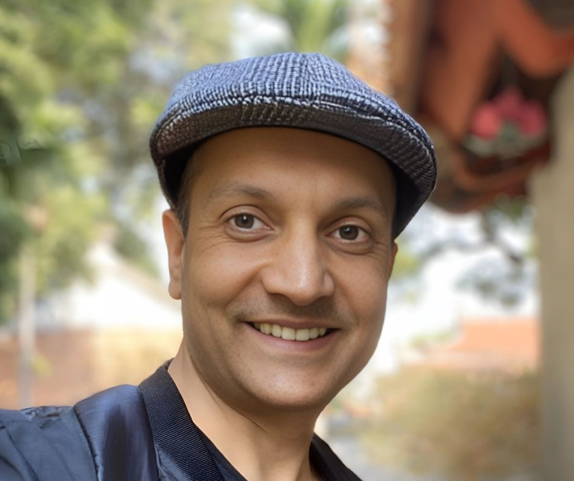
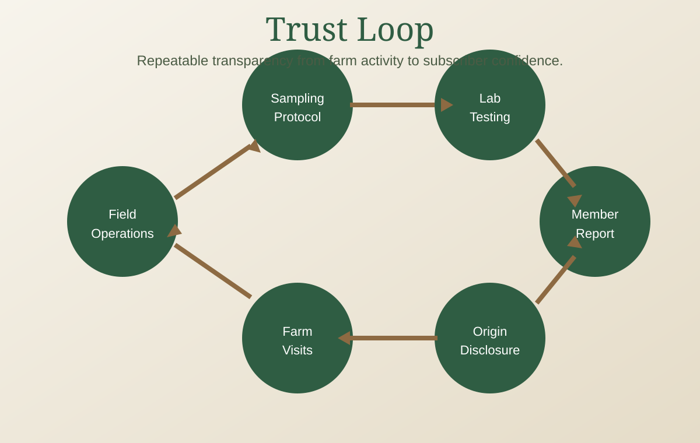

What Dirgha is
- A working farm habitat with real food production
- A curated community of owner-participants
- An operations model sustained by farm economics
- A transparent, test-first approach to organic claims
Katur Village, Nanjangud | Project 1
Dirgha Farms is a working farm habitat built around a simple belief: clean air, clean water, clean food, and living soil are infrastructure for a long life. They are not lifestyle add-ons.
Why Dirgha
Across urban India, basic biological inputs are under stress: water quality, air quality, food transparency, and ecological stability. Dirgha is built to give families direct and long-term control over these fundamentals.

What We Are / Are Not
Reasons To Believe
Venkatesh has farmed this land continuously and remains present through the year. This is operational depth, not slideshow management.
The mature farm is income-generating today. The model starts from existing farm behavior and scales with additional acreage.
The family farm collaboration adds certified-organic production and a transparent testing pipeline from day one.
How It Works
Individual plots for owner-participants
Undivided common land for shared use
Company-managed farmland for operations and services
The design keeps long-term alignment intact. The company keeps skin in the game, operations stay active, and community infrastructure remains maintained through farm activity, not short-term extractive fees.
See sustainability model in resourcesCommunity
Dirgha is intentionally curated for a small, aligned community. Shared meals, harvest days, and longevity-focused programs are designed to deepen relationship with the land and with each other.
Book A Farm Day

Produce Snapshot
Mature arecanut, coconut, sapota, sitaphal, and figs, with expanded diversified crop development across additional acreage.
Jackfruit, papaya, seasonal vegetables, mangoes, bananas, and coconuts with regular independent testing reports shared with members.
Field Gallery

Mature plantation sections with stable operational rhythm and seasonal harvest visibility.

On-ground water infrastructure that supports long-term crop continuity and resilience.

Roads, field access, and practical working systems designed for day-to-day farm operations.
People Behind The Land
12+ years of continuous on-ground operations, crop planning, and daily execution at Katur.

Business and community lead shaping long-horizon alignment across operators, members, and partners.
Trust And Transparency

Start With Produce